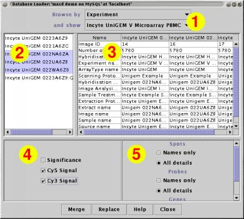

The Database Loader plugin can import data from a maxdSQL database using a JDBC connection.
When this plugin is started, the Database Connection panel will be displayed. Use this panel to login to a maxdSQL database.

Once you have logged in, a new panel appears. This panel is initially empty
1. Choose browse table
Use the "Browse by" dropdown menu to select which database table is used to generate the list of Measurements. You can choose between Array, ArrayType, Experiment, Extract, Hybridisation ,and Image.
The "and show" dropdown menu will be updated to contain all of the entries from the table selected in "Browse by".
Use the "and show" menu to pick one instance. The Measurement list in the top-left panel will now display all Measurements which are linked to this instance.
2. Select Measurement(s)
In the top-left panel, a list of Measurement names will be displayed. The contents of the list depend on the Browse by and and show selections. Changing either of these selections results in a new list being shown.
Select a single Measurement by clicking on it. Select a continuous range by clicking on the first Measurement in the sequence and 'Shift-Click'ing on the last one. Use 'Ctrl-Click's to toggle the selection of a single Measurement.
3. View details
The top-right panel displays the details of the database relationships of the currently selected Measurements. Details include the names of the samples, extracts, protocols used to generate this data. This data will be loaded as Measurement attributes.
4. Select Spot Attributes
By default, any Spot Attributes that Measurements have will not be loaded.
In the bottom-left panel are checkboxes for the Spot Attributes of the selected Measurements. Each Spot Attribute can be independantly selected for loading.
When more than one Measurement is selected, checkboxes for all spot attributes found in any selected Measurements are shown. If a spot attribute is not present in all selected Measurements, then the number of Measurements that do have it is shown beside the name.
5. Select Gene, Probe and Spot details
Additional data may exist in the database for each of the Spot, Probe and Gene names. This information can be loaded into maxdView as Name Attributes.
Controls in the bottom-right panel determine whether these details are loaded for each of the name types.
6. Load the data
Once you have selected all of the Measurements (and additional data) you are interested in, use Merge to add them to the existing data, or Replace to remove the existing data prior to loading. See the Merging data help page more details on how merging is performed.